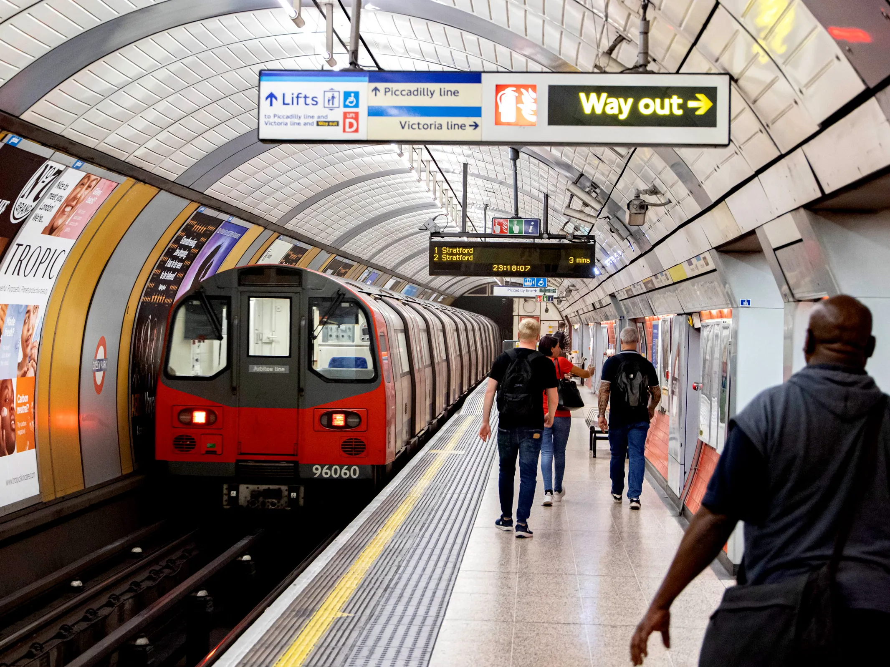
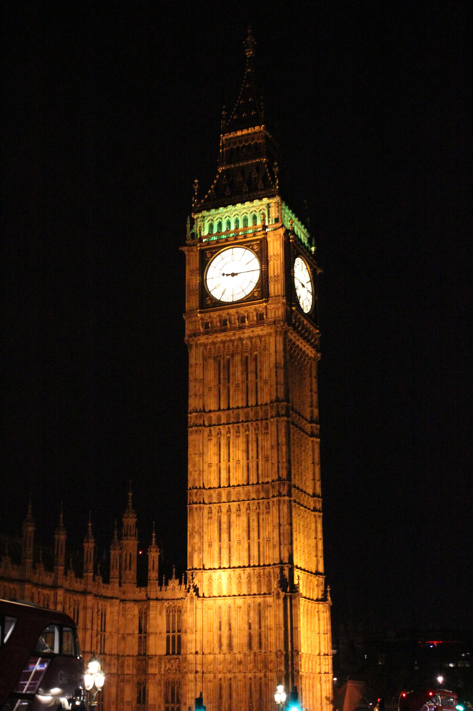
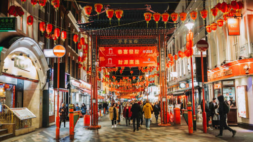
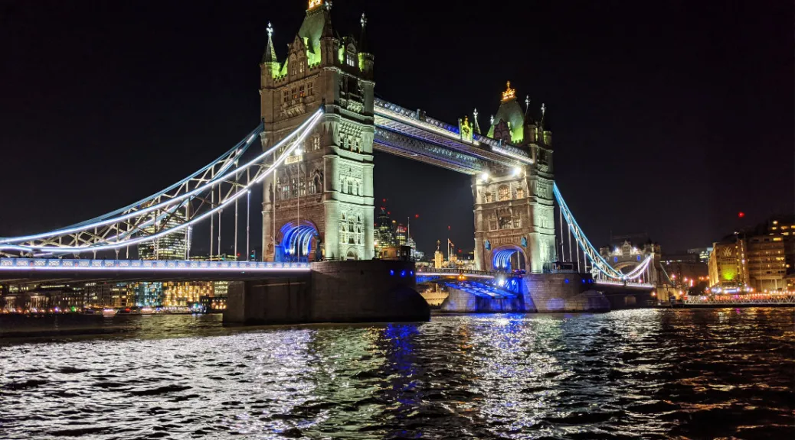

Belangrijke Feiten over Londen:
Hoofdstad van het Verenigd Koninkrijk:
Londen is de hoofdstad van Engeland en het Verenigd Koninkrijk en een belangrijk politiek, financieel en cultureel centrum.
Oprichting:
Londen werd oorspronkelijk gesticht door de Romeinen rond 43 na Christus en stond toen bekend als Londinium. Het heeft zich sindsdien ontwikkeld tot een wereldstad.
Bevolking:
Londen heeft ongeveer 9 miljoen inwoners (2023) en is een van de grootste steden in Europa.
Wereldstad:
Londen is wereldwijd bekend om zijn invloed op de economie, kunst, mode, politiek en geschiedenis.
Verkeer:
Londen is beroemd om zijn "The Tube" (de Londense metro), het oudste metronetwerk ter wereld, dat in 1863 werd geopend.
Belangrijkste

Bezienswaardigheden:
Het Britse Museum:
Een van de grootste en meest prestigieuze musea ter wereld, met een enorme collectie kunst en artefacten uit de wereldgeschiedenis. Het beroemde Rosetta Stone en de Elgin Marbles zijn hier te zien.
De Tower of London:
 Dit middeleeuwse kasteel is beroemd als de zetel van de koninklijke schatten, waaronder de Britse kroonjuwelen. Het heeft ook een duistere geschiedenis als gevangenis en executieplaats.
Dit middeleeuwse kasteel is beroemd als de zetel van de koninklijke schatten, waaronder de Britse kroonjuwelen. Het heeft ook een duistere geschiedenis als gevangenis en executieplaats.
Buckingham Palace:
De officiële residentie van de Britse monarch. Bezoekers kunnen de Changing of the Guard ceremonie meemaken, en in de zomer kun je de staatkamers bezoeken.
De Big Ben en de Houses of Parliament:
De iconische Big Ben (officieel de Elizabeth Tower) is een van de meest herkenbare symbolen van Londen. Het is gelegen naast de Houses of Parliament, het politieke hart van het VK.

Extra Interessante Feiten:
Londen heeft een van de grootste Chinatown's in Europa, gelegen in de buurt van Soho, met tal van restaurants en winkels die Chinese cultuur en eten vertegenwoordigen.
De Theems is de op een na langste rivier in het VK en stroomt door het hart van de stad. Er zijn verschillende bruggen over de rivier, zoals de beroemde London Bridge en Millennium Bridge.
Londen is een stad van contrasten: het biedt zowel moderne wolkenkrabbers, zoals het Shard, als historische gebouwen die duizenden jaren geschiedenis vertegenwoordigen.
Londen is een stad die zowel de geschiedenis als de moderne tijd omarmt, en elke hoek van de stad biedt iets nieuws om te ontdekken. Het is een plek waar culturen samenkomen, waardoor het een van de meest dynamische en interessante steden ter wereld is!
  
Iconische Bezienswaardigheden
- Bezoek Buckingham Palace
- Verken de Tower of London
- Zorg dat je Big Ben en het Houses of Parliament ziet
- Geniet van het uitzicht vanaf The Shard
- Maak een rit in het London Eye
Musea en Galerijen
- British Museum
- Tate Modern & Tate Britain
- Natuurhistorisch Museum
- Science Museum
- Victoria & Albert Museum
Buitenactiviteiten en Parken
- Maak een wandeling door Hyde Park
- Verken Regent’s Park
- Bezoek Richmond Park
- Maak een Thames River Cruise
- Klim naar Primrose Hill voor het uitzicht
Markten en Winkelen
- Verken Borough Market
- Shop bij Camden Market
- Wandel over Portobello Road Market
- Bezoek Oxford Street om te winkelen
- Ontdek Carnaby Street voor unieke mode
Eten en Drinken
- Probeer Afternoon Tea in The Ritz
- Verken Street Food op Brick Lane
- Bezoek een traditionele Engelse pub
- Neem een Gin Tour
Dagtrips en Excursies
- Bezoek Windsor Castle
- Verken Stonehenge
- Maak een dagtrip naar Oxford of Cambridge
- Bezoek Kew Gardens
Sport en Evenementen
- Bezoek een Premier League Voetbalwedstrijd
- Bekijk de London Marathon
- Zie het Wimbledon Tennistoernooi